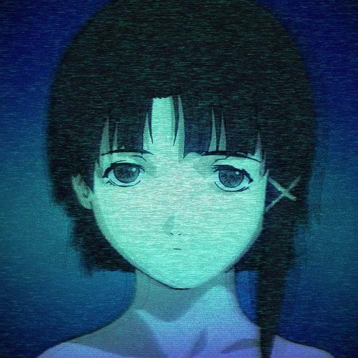

a little corner of the wired

SIGNAL FOUND / 01eldivoy
lil watermark glazer,
always down to make new friends
@eldivoy / eldi01_
TRANSMISSION 01 / 05
Duvet
bôa
0:000:00

SIGNAL FOUND / 01lil watermark glazer,
always down to make new friends
@eldivoy / eldi01_
Duvet
bôa
a signal is waiting
eldivoy's personal space